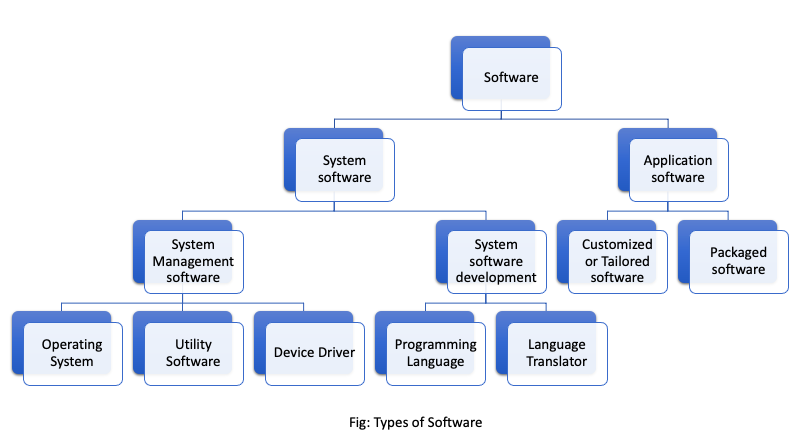

Computer software and operating system
Software - Introduction:
As we know stand alone hardware cannot do nothing, for the smooth operation of our Computer System there should be proper coordination between hardware and software. Software helps to mobilize the hardware and other resources. In order to mobilize hardware we have to write several set of instruction which instruct computer what to do, what not o. These set of instruction are collectively know as program and the term software is the collection of related programs and associated documents. In Order to produce useful output, hardware and software must work together. Nothing useful can be done with the hardware only and software cannot be utilize without hardware. The different types of software are:

- 1) System software:
-
System software is set of one or more programs designed to control the operation of our computer system. This type of software doesn't fulfill the specific requirement of the user. They are general program written to assist human in the use of the computer system. In general system software support the running of other software, communicate with peripheral device, support the development of other types of software and monitors the use of various hardware resources. Thus, the system software makes the operation of the computer system more effective and efficient. The system software is categorized into two categories.
- 1.1) System Management:
- It is responsible for proper management and functioning of the computers system. All types of management between computer hardware and software is performed by system management software. There are 3 types of system management software:
- 1.1.1) Operating System:
- Operating system is a collection program that controls the overall operation of the computer system. It is the 1st program that is loaded into memory when the computer is turned on. It provides platform for other application program to run and execute. It provides user with an interface so that uses can easily communicate with computer. For example Linux, Windows, Mac etc
- 1.1.2) Utility software:
- It is the supporting software which is used to perform specific task related to the maintenance of the computer system. Some of the utility software are included in operating system where as some are available as separate utility in market. They are also called service program. For example Norton Utility, PC tools, win zip etc
- 1.1.3) Device driver:
- A device driver is a software which is responsible for smooth functioning of the hardware device that is connected to the computer. When we add a new device to the computer, we need to install new software called device driver. Device driver will co-ordinate with the operating system and the newly installed hardware functions properly and smoothly.
- 2) Application Software:
- Application software is a set of one or more program which are designed to do a specific task. It is made to fulfill the user demand. This program directs a computer to solve user oriented problem such as preparing bills, calculating mathematical equations, preparing mark sheets etc. The software that are developed for user purpose is called application software. These types of software are generally developed using high level language. For example Ms-Excel, Photoshop, Billing software etc. There are two types of application software.
- 2.1) Packaged software:
- They are the generalized set of programs designed and developed for general purpose. It is generally large sized, error-free, advanced and standard software with much more functionality for special work. This type of software doesn't perfectly match the requirement of many organizations or users. They cannot be changed easily and are developed and designed by reputed software companies so they are trustworthy. They are expensive for small organizations. For example Ms-Office, Adobe, Macromedia etc.
- 2.2) Customized / Tailored software:
- This is a software developed in high level language for special tasks. These types of software are developed for some specific purpose for solving specific problems of specific users or organizations. The requirement of the user or organization can be perfectly matched. They can be changed easily since they are made by local programmers. For example: payroll system, inventory management, school management, billing software, mark sheet evaluation etc.
Operating system - Introduction
An operating system (OS) is an integrated set of program that controls overall resources such as CPU, memory, input-output device of the computer system. The major objective of operating system is to improve the performance and efficiency of a computer system. Like the manager of a company, an operating system is responsible for the smooth and efficient functioning of the entire computer system. The operating system provides the platform for other application program/software to run and execute. It provides user with an interface so that user can easily communicate with computers, which is more convenient to use and operate.
An operating system is a collection of program that controls the overall operation of the computer system. It also controls and co-ordinate the use of hardware, among the various application program for various user. So, it act as an interface between user and the computer hardware. The other major functions of operating system are:
- It controls, monitors and coordinates the overall operation of our computer system.
- It acts as an interface between the user and the computer.
- It provides a platform to develop, run, and execute other computer programs.
- It manages hardware resources such as the CPU, memory, input-output terminals, networking equipment, etc.
- It hides programming and hardware complexity from the user.
The primary goal of an operating system is to maximize the productivity of a computer system by operating it in most efficient manner and maintaining the amount of human intervention. Some example of operating system are: MS-DOS, Windows, LINUX, MACOS, UNIX, Chrome, Fedora, Ubuntu etc.
Functions / Features / Advantages of Operating System (OS)
- 1) Input-Output (I/O) Management:
- Input-Output is essential to operate any computer. It allows the computer to interact with several peripheral devices such as keyboard, mouse, printer, scanner, etc.
- 2) User Interface (UI):
- User Interface means an ideal environment in which a user can work on it so that s/he can interact with the computerized system. Every operating system provides the feature of user interface in order to enhance the experience and joy of using a computer or any other computerized system. It acts as a bridge between the user and the computer. There are 2 types of user Interface:
- Character/Command User Interface (CUI): Eg MS-DOS
- Graphical User Interface (GUI): Eg Windows, MAC OS
- 3) Security:
- The operating system of a computer has a number of built-in tools to protect against security threats such as viruses, unauthorized access, suspicious network activity, etc. The basic security in an OS is to control access to your computer by setting users and passwords.
- 4) Process Management:
- The process management allocates a processor to execute a chosen process. OS acts as a traffic controller, job scheduler, process scheduler, and dispatcher.
- 5) Memory Management:
- Memory is a large array of bytes, each with its own address. When the user requests the CPU for read-write operation, the OS determines the amount of memory required for the program instruction and data. Then the OS allocates the required memory to load the program and data into RAM. When the program terminates, it frees up the space and a new program is loaded.
- 6) Data Management:
- Data management allows organizing their data into logical grouping called files. Earlier Operating systems did not provide features of data management, hence, they were inflexible. But nowadays, every operating system provides this feature.
- 7) Command Interpreter:
- The command interpreter reads the command that a user types in at a terminal, interprets them, and translates them into a detailed set of instructions that computer hardware can understand. Every operating system must have a command interpreter for its operation.
- 8) Dead-Lock Prevention:
- During processing, a situation can arise in which a resource shared by two or more processes cannot continue because the resources required by a process is held by the other. This situation is known as deadlock. For example, if process-1 allocates resources A and later requires resources B, and process-2 allocates resources B and later requires resources A. In this situation, neither process-1 nor process-2 will be executed. Such a situation is called deadlock. The operating system ensures the prevention of deadlock by taking situational action by careful allocation of resources.
- 9) Time Sharing:
- The function of OS that involves CPU to allocate time to a number of users on the same computer. This property is generally found in network operating systems such as Windows NT.
- 10) Virtual Memory:
- Virtual memory is the feature of an operating system that allows a computer to compensate for the shortage of physical memory by transferring temporary files from RAM to disk. Virtual memory has twice as many addresses as main memory. The process of translating virtual addresses into real addresses is known as mapping. The copying of virtual pages from disk to main memory is swapping.
Types of Operating System (OS)
- A) On the basis of processing
-
- 1) Multi-programming OS
- Multi-programming is used in multi-user environments. It is a technique in which multiple user programs are executed simultaneously by a single processor. Multi-programming means when two or more programs are provided to the CPU for processing or loaded into the internal storage of the CPU at the same time.
- 2) Multi-tasking OS
- Multi-tasking OS allows more than one program to run concurrently, mainly in a single-user system. These computers are capable of executing several tasks or programs at the same time. Examples include MS-Windows, Linux, MAC OS, etc.
- 3) Multiprocessing OS
- Multi-processing systems have more than one processor linked in a coordinated way. Multiprocessing OS supports running a program on more than one CPU. Examples include UNIX.
- 4) Time-Sharing OS
- Time sharing is a technique that enables many people located at various terminals to use a particular computer system at the same time. Advantages: Provide quick response, reduce CPU idle time. Disadvantages: Problem of reliability, less security, integrity.
- 5) Batch processing OS
- Batch processing is a technique that requires grouping similar jobs consisting of programs, data, and system commands. It is also known as offline processing. Disadvantages: It does not allow interaction between users and programs during execution.
- 6) Multi-threading OS
- A program in execution is known as a process and can be divided into multiple smaller sub-processes called threads. Multi-threading OS has the ability to divide processes into threads and execute them concurrently.
- 7) Real time OS
- Real-time processing method is one that controls the environment by receiving data and taking action quickly to affect the functioning of the environment at the same instant of time. Examples include airlines or flight seat availability, rocket launching systems, wholesale suppliers and manufacturers.
- 8) Online processing OS
- In this method, transactions are processed as soon as they happen at the place of origin. It allows user interaction or input during processing, and the output is provided back to the user as soon as processing is completed.
- B) On the basis of User Interface (UI)
- A user interface allows user to interact with the computer system. It provides user with an ideal environment so that user can experience better computing. It brings structure to the interaction between user and computer. Without user interface it is almost impossible to operate a computer smoothly. Hence, in order to enhance the experience of using computer, UI plays vital role. Mainly there are 2 types of User Interface (UI).
-
- Character User Interface (CUI)
- It is a type of operating system in which whole computer operates or depend upon the command issued by user. All the operations that take place in CUI have their own specific command. Hence, they are known as Character User Interface. User have to remember all the command need to operate the computers. So, they are non user friendly. Only the people people having technical knowledge would operate this type of operating system. It is primitive type of OS, in which graphics, pictures, icons, drop-down menu, dialogue box etc are not used which make it more difficult to use. It uses the character or text mode of computer such as DOS and UNIX. A command prompt is a sequence of character used in CUI. Commands are typed in to instruct computer. MS-DOS is a Character User Interface operating system.
The major advantage of this type of OS is they can have quick response as long as user enters correct command whereas, the disadvantages of command driven User Interface is that, they are very difficult to use if the user is beginner and doesn't know correct command. However, it can be used in older system with no processing capabilities and low storage
- Features of CUI
-
- It is a single user and single tasking operating system.
- Less user-friendly than GUI.
- Commands are used to instruct the computer.
- User needs to remember the command for operating this system.
- It cannot display graphics, icons, pictures, and multimedia.
- It is faster than GUI systems.
- Pointing devices such as mouse, joystick, and track-pad are not recognized.
- It can be used in low memory and low processing computers.
- Graphical User Interface (GUI)
- GUI is a type of operating system where computers are operated by clicking or selecting icons, dialog boxes, etc. It is user-friendly and widely used for domestic applications. Examples include Windows, MAC OS.
- Features of GUI
-
- It is user-friendly and easy to use.
- Supports full multimedia and animation.
- Requires larger memory for processing.
- Can be used in a network environment.
- It is a multi-tasking, multi-programming, and multi-user operating system.
- Every type of peripheral device can be used.
GUI environment have following basic components.
- Icon: Icons are the small pictures that represent commands, files, or windows.
- Pointer: A symbol (usually an angled arrow) that appears on the display screen and is moved to select objects and commands. They are controlled by a pointing device such as a mouse, trackpad, or light pens.
- Desktop: The area on the display screen where icons are grouped is referred to as the desktop.
- Windows: Windows are displayed on the screen, and we can change their shape and size at will. Each window can run a different program or display different information.
- Menus: Most graphical user interfaces let us execute commands by selecting a choice from a menu.
- Folders: Graphical representation of a directory.
Differences between Character User Interface and Graphical User Interface
| Character User Interface [ CUI ] |
Graphical User Interface [ GUI ] |
| In CUI has to interact with the applications by making use of commands. |
It is a user interface in which user interact with applications by making use of graphics. |
| CUI stands for Character User Interface. |
GUI stands for Graphical User Interface. |
| In CUI only one task can run at a time i.e. Single tasking |
In GUI more than one task can run at a time simultaneously. |
| It is not user friendly interface. |
It is very user friendly interface. |
| The user does everything by using commands. |
Everything is interacted with by pointing the application using devices like a mouse. |
| Faster than GUI. |
Slower than CUI. |
| Older computers were operated on CUI. |
Modern computers use GUI. |
| eg DOS, UNIX etc |
eg, Windows, MAC-OS |
- c) On the mode of user:
- There are two types of OS on the basic mode of user.
- 1) Single User:
- A single user OS is a type of OS that is developed and intended for use on a computer or similar machine that only has one user at any given time. This is the most common type of OS used on a home computer as well as on computers in office or other work environments. There are two general type of single user system. Single user systems are designed for one user at a time, while multi user system are not feasible for general purpose computing. For eg MS-DOS, PC-DOS etc.
- 2) Multi User:
- Multi user OS is computer operating system that allows multiple user on different terminal to access a single system with one OS in it. A multi user OS differs from a single user system in that each user is accessing same OS at different machine. The multi user OS shares computer resources among different users, allowing them to use a similar slice of the processor time. This concept is also known as time sharing. Due to that, it gives the user the impression that they are all being served simultaneously even though the OS serves them one at a time for example: Linux, UNIX etc.
Some important Operating Systems in use:
- Open source Operating System:
- Open source Operating System generally refers to those systems whose source code is readily available on the Internet for the world to use. Basically, the code of the open source software according to the users' requirements. They need not be licensed to use the software. Source code can be modified and redistributed by anyone. Some examples of open source operating systems are Open Source Software are Linux, Unix, Mozilla, Apache etc. Some common examples are of open source operating system are Linux, Minix, Open Solaris.
- UNIX:
- UNIX is a powerful and flexible operating system with good utilities and commands. It is multi-user, multitasking and is used in bigger size machine like the mainframe computer. It was developed by AT&T Bell Lab around 1970. UNIX is coded in C and Assembly language. The development of the UNIX has given birth to many other operating systems such as Linux, Solaris etc. These operating system have their own features.
- Linux:
- Linux is the open source powerful UNIX based operating system, that can run on variety of platform including personal computers. It is also referred to as multipurpose system. It was developed by Linux Torvalds at the University of Helsinki as a college project. Here the source code is Linux available like all the source code. It is user develop product, enhanced and improved by many people for their own use have developed their own versions and drivers, multi-user, multi-tasking and has support for various hardware platform. It is distributed through different distribution channels like Debian, Fedora, Redhat, Granular, Mandriva Linux.
- MAC OS:
- MAC OS is a proprietary operating system developed by Apple Macintosh computers, it has a unique graphical user interface. Earlier versions of MAC OS were only compatible with Motorola 68000 series of processors but now they are compatible with Intel processors also.
Questions on Computer Software and Operating Systems
- What is the concept of software, and why is it essential in computing?
- What are the different categories of software? Provide examples for each category.
- What is an operating system, and what role does it play in a computer system?
- Explain the key terminologies associated with operating systems, such as multiprocessing and distributed systems.
- What are the main features of a GUI-based operating system?
- How do you manage files and folders in Windows using File Explorer?
- What are some common open-source operating systems, and how do they differ from proprietary systems?